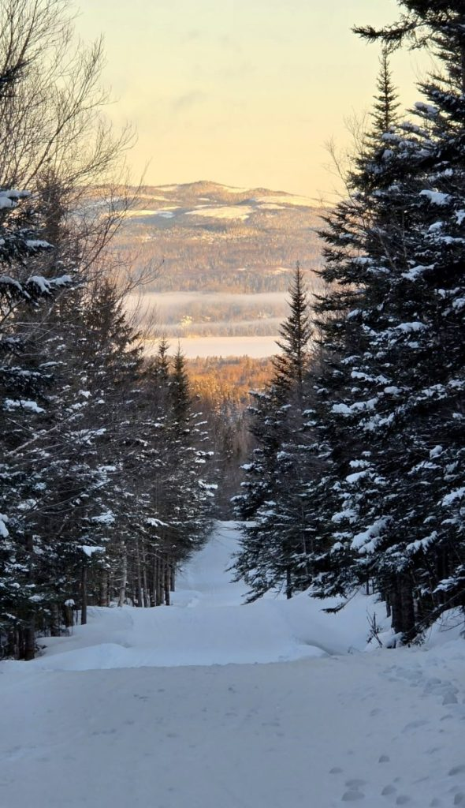
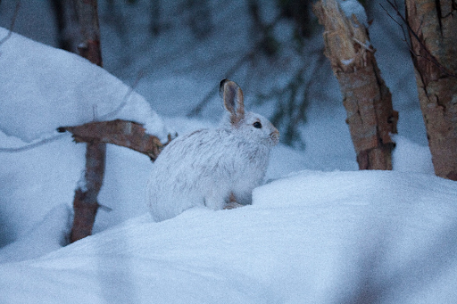
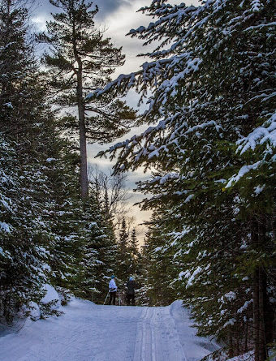
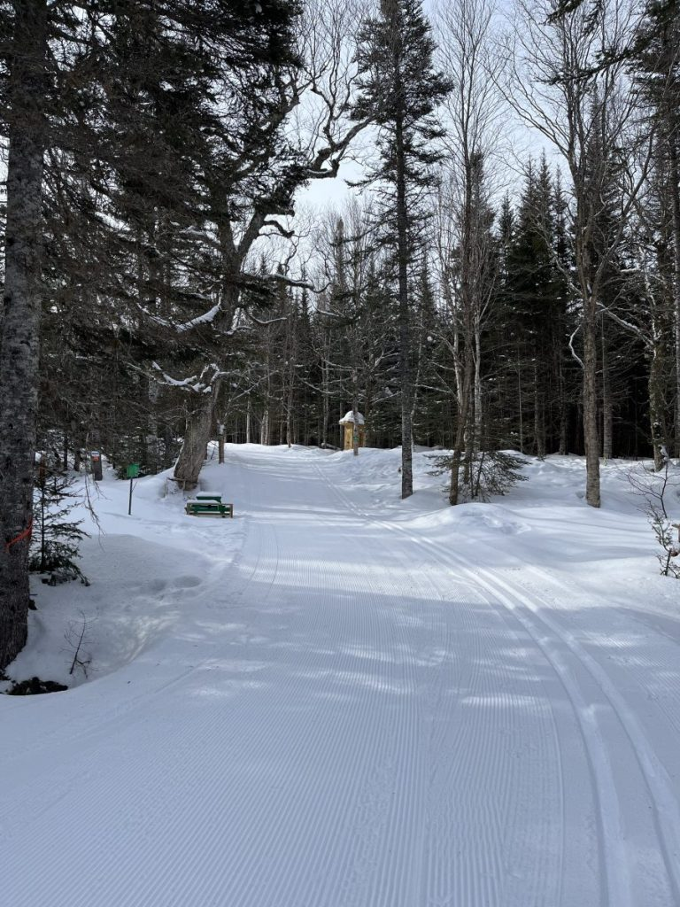
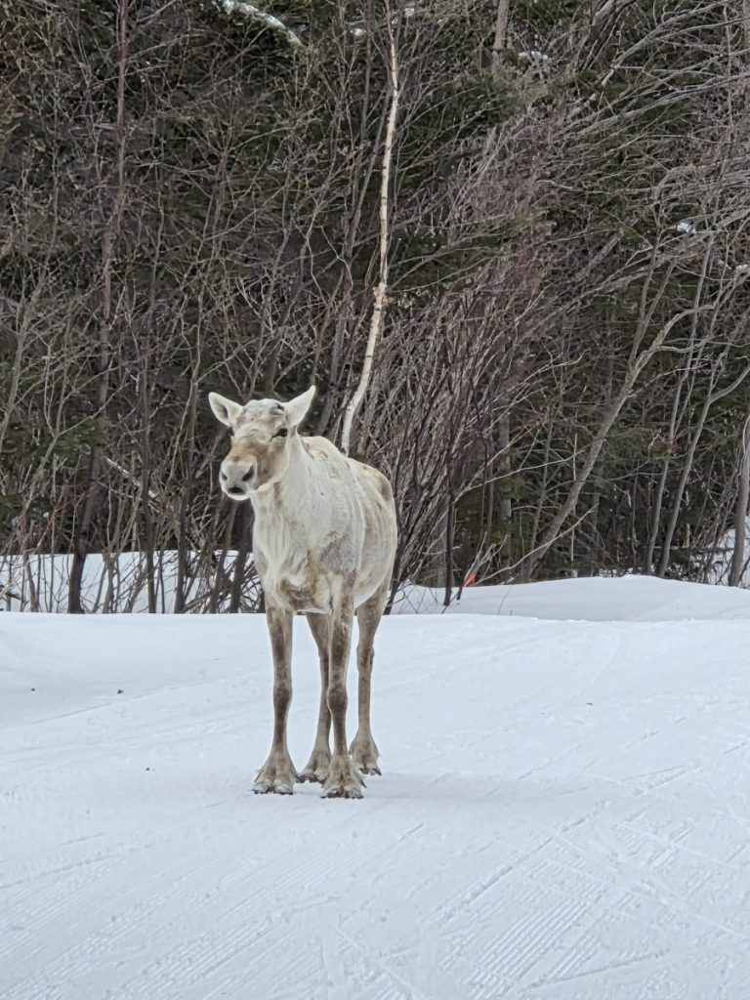

Our Trails
Six named trails, groomed for every level

Looper Run 2.5 km · Intermediate
Named after the forest insect of the same name, the Looper Run was the first trail developed by the ski club. It connects with Lone Pine, Twisted, and Pine Marten. You can spot several owl nest boxes as you ski along, with a small climb up to a resting area for a unique view of Deer Lake and the surrounding mountains. Continuing up the hill and around the bend, the trail slopes downward providing a nice glide back to the chalet – great for practicing your skate skiing.
Jackrabbit 1 km · Beginner
Only 1 kilometer in length, this beginner trail is located close to the chalet. It is a gentle, rolling landscape allowing skiers to develop their techniques. Come out to enjoy a night ski after a long day!


Lone Pine 2.5 km · Novice
The splendor of a lone, stately pine inspired this trail's name. Designed with novice skiers in mind, it is experienced as a counter-clockwise route. Keep an eye out for the owl boxes placed along the trail – you may spot a Boreal Owl or a Northern Saw Whet Owl.
For the 2027 season, this run will be lit for night skiing.
Twisted 3.0 km · Challenging
If you enjoy a challenging run with a few hills and some beautiful scenery, this trail is what you are looking for. The fire pit is located under the large yellow birch trees near the shortcut that connects to the Lone Pine Trail. Twisted is named for several standing dead pines that resemble totem poles, amid an abundance of huge yellow birch (also known as witch hazel).


Marten 3 km · Intermediate
The Pine Marten trail is aptly named after the endangered animal that is occasionally spotted here, bounding through the snow or climbing a tree for a quizzical look at passing skiers. This run challenges the intermediate skier on its rolling hills – a brief skate or stride to the top of the grade turns into another glide down to meet with the Looper Run and back to the chalet to warm up at the fire.
Caribou 5 km · Intermediate
This intermediate trail is named after the native Caribou, occasionally seen in the area. On a sunny day you can take pleasure in a wide open sky and a splendid view of the North Harbour Valley and the Long Range Mountains. Caribou can be accessed at different points from 3 other trails – it starts halfway round Lone Pine, at ~1.8 km connects to Twisted, at ~3.5 km there's a shortcut to Marten, and at the 5 km mark it meets Marten. A favorite of the Canada Jay, Pine Grosbeaks and Crossbills.
